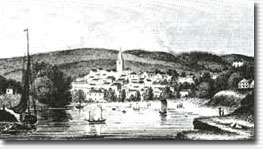
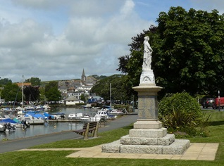

If you love the hustle and bustle of a traditional English market town, you’ll love Kingsbridge. Situated in the South Devon Area of Outstanding Natural Beauty, Kingsbridge sits on its own estuary and is surrounded by lush, green rolling countryside, making it perennially popular for walking and sailing. The town attracts a lot of tourism yet manages to keep a tranquil charm and friendly atmosphere. It is the third largest settlement in the South Hams, following Ivybridge, the largest, and Totnes. With a population of 6,116 (2011 census), the town is the perfect location to retreat away from city life.
History

The head of the estuary in 1819
The town formed around a bridge which was built in or before the 10th century between the royal estates of Alvington, to the west, and Chillington, to the east, hence giving it the name of Kyngysbrygge ("King's bridge"). In 1219 the Abbot of Buckfast was granted the right to hold a market there, and by 1238 the settlement had become a borough. The manor remained in possession of the abbot until the Dissolution of the Monasteries, when it was granted to Sir William Petre. Kingsbridge was never represented in Parliament or incorporated by charter, the local government being by a portreeve. It lay within the hundred of Stanborough.
Clock on the old
Town Hall building
Kingsbridge is in fact a combination of two towns, Kingsbridge and Dodbrooke. Dodbrooke was granted its own market in 1257 and had become a borough by 1319. While Dodbrooke was originally considered to be the dominant of the two, Kingsbridge later expanded to include it. The town consists of two ecclesiastical parishes: St. Edmund's in the west and St. Thomas Becket at Dodbrooke in the east. St. Edmund's Church, in mainly Perpendicular style, retains some 13th-century features including a font, but was enlarged and reconsecrated around 1414 and was mostly rebuilt in the 19th century. The parish church of St. Thomas Becket displays a particularly well-preserved rood screen, restored in 1897.
The Prince Regent (the future King George IV) considered building his pavilion above nearby South Sands beach before finally settling on Brighton.
In 1798 the town mills were converted into a woollen manufactory, which produced large quantities of cloth, and serge manufacture was introduced early in the 19th century. During the 19th century the town had an active coastal shipping trade, shipbuilding, a tannery, other industries and a large monthly cattle market. The chief exports were cider, corn, malt, and slate.
The town centre retains many 18th and 19th-century buildings. The Shambles, or market arcade, was rebuilt in 1796 but retains its 16th-century granite piers. The former grammar school, now a museum, was founded and built by Thomas Crispin in 1670.
The town today

The head of the estuary in 1819
Kingsbridge has been the main market town in the area for centuries. Being situated within the South Devon Area of Outstanding Natural Beauty (AONB) and its proximity to the spectacular south Devon coast and sailing venues, such as Salcombe, Kingsbridge has developed into a popular tourist destination. Its attractions include several restaurants, pubs, a cinema housed in the town hall building, and a museum devoted to the chemist William Cookworthy, born in Kingsbridge in 1705.
There are two supermarkets in Kingsbridge; a Morrisons and a Tesco Store - which opened on Valentines Day 2011. It also has a large secondary school, Kingsbridge Community College, which has over 1000 pupils and serves the surrounding area. 'Coast' is the only nightclub in Kingsbridge, with the next nearest being in Torquay
The town is linked to Plymouth and Dartmouth by the A379 road, and to Salcombe and Totnes by the A381. For seventy years Kingsbridge boasted a railway station until the branch line, via South Brent, was closed in 1963 as part of the reshaping of British railways, commonly known as The Beeching Axe. An industrial estate now occupies the site of the former station yard, but a railway bridge and a short section of overgrown embankment can be seen adjacent to the Plymouth road west out of the town. current Mayor of Kingsbridge is Chris Povey.
The town is twinned with Isigny-sur-Mer in France and Weilerbach in Germany.